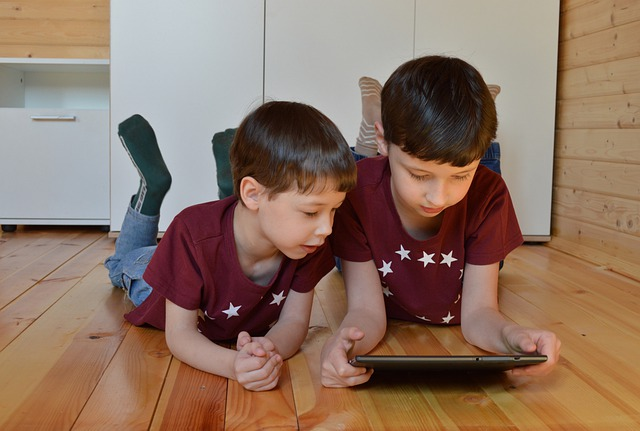
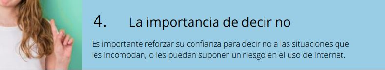

Uso responsable y ético en Internet
Las ventajas del uso de Internet en nuestros alumnos es clara: Autonomía en búsqueda de información, uso de herramientas actuales, interrelaciones.... pero también hay peligros acceso a contenidos inapropiados, posibles relaciones peligrosas, pérdida de intimidad..

Decálogo de uso seguro y responsable de Internet para la proteccion a la infancia
1.- Fomentar el pensamiento crítico Es necesario desarrollar su capacidad de crítica para discernir entre los contenidos a su alcance, identificar si son apropiados, o si se les está intentando manipular. 2.- Proteger sus dispositivos y servicios Tener un adecuado nivel de protección y configuración de los dispositivos y de la información que contienen es imprescindible para prevenir riesgos en Internet. 3.- Crear una identidad digital positiva. Es fundamental que aprendan a proteger su información más sensible, construyendo una identidad digital positiva que refuerce su seguridad dentro y fuera de la Red.

5.- Uso equilibrado, supervisión y control. Desde la infancia es necesario ir promoviendo un uso equilibrado de Internet, con normas claras, medidas de supervisión y control, y fomentando contenidos positivos. 6.- Aprender a actuar frente a un problema. Es fundamental conocer y utilizar los mecanismos de denuncia y bloqueo disponibles, y saber pedir ayuda. Los profesionales de servicios de protección a la infancia han de disponer de pautas claras para afrontar las problemáticas relacionadas con Internet. 7.- Gestionar la ciberseguridad Los datos personales de los menores son especialmente sensibles. Se han de tratar y proteger adecuadamente. 8.- Mejorar la competencia digital. Debe existir el compromiso de colaborar y ayudar en los procesos educativos de los menores, también en el medio digital, contribuyendo a su desarrollo e inclusión. 9.- Recursos para menores de edad. La ciberseguridad es parte de su día a día. Para reforzarlo es útil trabajar de forma dinámica e interactiva con recursos atractivos . 10.- Saber pedir ayuda Ante un problema en línea, han de comunicarlo a un adulto de confianza. Ver ayuda
Extraido de la guia profesionales y protección a la infancia Incibe IS4K Observatorio de la infancia

Ciudadanía digital por Alfabetizacion: INTEF www.http://aprende.intef.es/ y Seguridad : Javier Quintana [CATEDU] bajo licencia Creative Commons Reconocimiento-NoComercial-CompartirIgual 4.0 Internacional License.